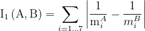
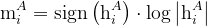
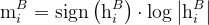
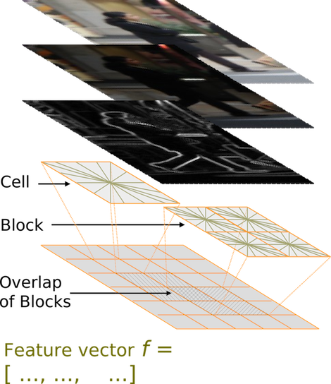
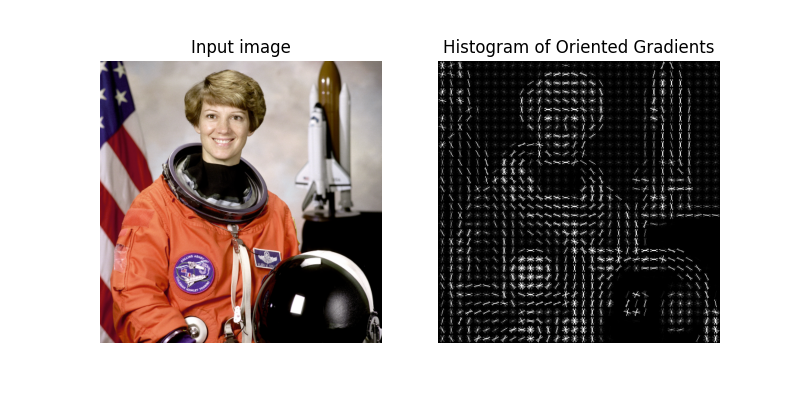
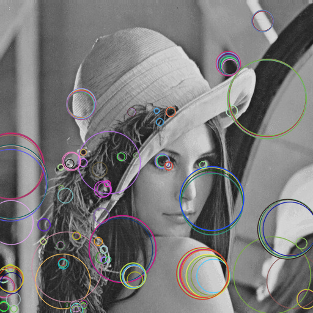
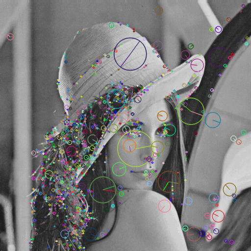
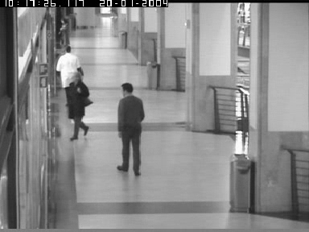
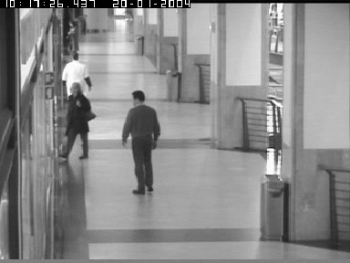
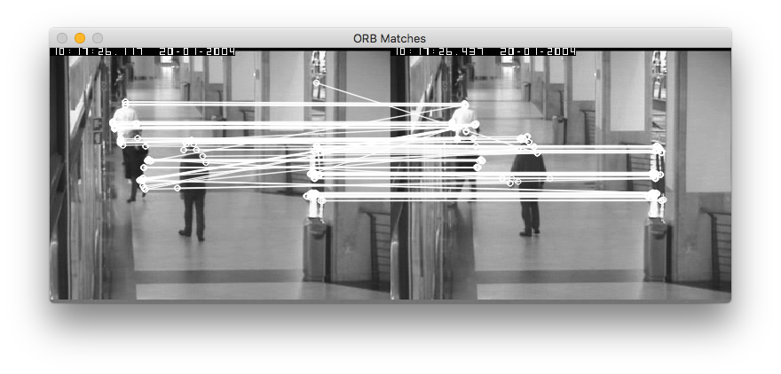

T6- Características de imagen¶
En este tema aprenderemos a detectar y extraer características útiles que describen una imagen.
Descriptores de contorno¶
Comenzaremos viendo las características que se usan para describir contornos. Estas características asumen que la imagen se ha binarizado previamente y tenemos el contorno de los objetos que queremos reconocer.
Momentos¶
Una vez hemos extraido los contornos de una imagen, por ejemplo mediante la función findContours cuya sintaxis vimos en el tema anterior, podemos calcular el momento de un contorno usando la función moments:
momentos = cv.moments(contour)
Esta función calcula todos los momentos del contorno. Para acceder a un momento determinado podemos indicar, por ejemplo: momentos['m00']. Estos son todos los momentos que devuelve la función:
# Momentos espaciales
m00, m10, m01, m20, m11, m02, m30, m21, m12, m03
# Momentos centrales
mu20, mu11, mu02, mu30, mu21, mu12, mu03
# Momentos centrales normalizados
nu20, nu11, nu02, nu30, nu21, nu12, nu03
Como ves, no todos los momentos se calculan. Por ejemplo, como el momento mu00 es igual a m00, OpenCV no lo extrae.
Si quieres conocer más detalles sobre la función moments puedes consultar este enlace.
Momentos de Hu¶
Los 7 momentos de Hu se calculan con la función HuMoments a partir de los momentos centrales normalizados extraídos previamente con moments. Por ejemplo:
hu = cv.HuMoments(momentos) # El array hu contiene los 7 momentos de Hu
La función matchShapes de OpenCV usa internamente estos momentos de Hu para comparar contornos, como veremos más adelante.
Cadenas de Freeman¶
En las primeras versiones de OpenCV se usaba la función approxChains para extraer códigos de cadena, pero a partir de la versión 3 OpenCV ha eliminado esta funcionalidad porque prácticamente no se utilizaban.
Descriptor Shape Context (SC)¶
Para extraer y comparar contornos con Shape Context podemos usar el siguiente código:
# Creamos una instancia de este descriptor
mySC = cv.createShapeContextDistanceExtractor()
# Lo aplicamos a dos contornos para obtener su distancia.
distance = mySC.computeDistance(contour1, contour2)
Ejercicio¶
En este ejercicio extraeremos una serie de descriptores de contorno a partir de imágenes binarizadas. El objetivo es encontrar las imágenes más similares a una imagen de referencia (a la que llamaremos query).
Se pide completar el siguiente código implementando los comentarios marcados con TODO. Guarda este programa con el nombre contourDescriptors.py.
En el main se recibe el número de una imagen (hay 20 en la carpeta) para usarla como query. Si no indicamos ningún parámetro, por defecto la query será la imagen número 3. Después se extraen los descriptores de esta imagen y a continuación se comparan con todos los descriptores obtenidos para el resto de imágenes, obteniendo una distancia (un valor de similitud) por cada descriptor implementado.
import os
import cv2 as cv
import argparse
import numpy as np
import math
def extraerDescriptores(image):
# Creamos un diccionario en el que guardar los valores calculados
imDescriptors = dict()
# Calculamos todos los contornos de la imagen
allcontours, hierarchy = cv.findContours(image, cv.RETR_LIST, cv.CHAIN_APPROX_SIMPLE)
# Extraemos el mayor contorno de la imagen, del que obtendremos todos los descriptores:
contour = max(allcontours, key=cv.contourArea)
# TODO: Guardamos el mayor contorno para el descriptor SC.
imDescriptors['contour'] = None
# TODO: Calculamos el perimetro
imDescriptors['perimetro'] = None
# TODO: Calculamos la compactación
imDescriptors['compactacion'] = None
# TODO: Calculamos la elongacion
imDescriptors['elongacion'] = None
# TODO: Calculamos la rectangularidad. Para ello usamos el rectángulo rotado MRE que envuelve el contorno con un área mínima
imDescriptors['rectangularidad'] = None
# TODO: calculamos el área del cierre convexo (pista: funcion convexHull)
imDescriptors['areaCierreConvexo'] = None
# TODO: Calculamos el centroide (X,Y) y orientacion usando los momentos
imDescriptors['centroide'] = None
imDescriptors['orientacion'] = None
# TODO: Calculamos los Momentos de Hu
imDescriptors['Hu'] = None
return imDescriptors
def computarDistancias(qDescriptors, imDescriptors):
# Calcular y devolver la distancia entre qDescriptors e imDescriptors para las siguientes características:
# TODO: Shape Context
dSC = 0
# TODO: Perímetro
dPer = 0
# TODO: Compactación
dComp = 0
# TODO: Elongación
dElong = 0
# TODO: Rectangularidad
dRect = 0
# TODO: Area del cierre convexo
dCierre = 0
# TODO: Distancia euclídea del centroide
dCent = 0
# TODO: Orientacion
dOr = 0
# TODO: Momentos de Hu (ver fórmula que se describe debajo)
dHu = 0
print(' dSC = %.3f' % dSC)
print(' dPer = %.3f' % dPer)
print(' dComp = %.3f' % dComp)
print(' dElong = %.3f' % dElong)
print(' dRect = %.3f' % dRect)
print(' dCierre = %.3f' % dCierre)
print(' dCent = %.3f' % dCent)
print(' dOr = %.3f' % dOr)
print(' dHu = %.3f' % dHu)
def main(args):
# Procesamos parámetros de entrada
path = 'shape_sample'
idxQuery = args.indexQuery
# Leemos imagen consulta
queryName = os.path.join(path, str(idxQuery) + '.png')
query = cv.imread(queryName, cv.IMREAD_GRAYSCALE)
# Comprobamos que la imagen se ha podido leer
if query is None:
print('Error al cargar la imagen')
quit()
qDescriptors = extraerDescriptores(query)
# Para las otras imágenes, calculamos sus descriptores y los comparamos con los de la consulta
for i in range(0,20):
idxImg = i+1
# Ignoramos esta imagen si es la misma que la de referencia
if (idxImg != idxQuery):
# Leemos la imagen
imageName = os.path.join(path, str(idxImg) + '.png')
image = cv.imread(imageName, cv.IMREAD_GRAYSCALE)
# Extraemos sus características y las comparamos con las de la query
print('---------')
print('Imagen', idxImg, ':')
imDescriptors = extraerDescriptores(image)
computarDistancias(qDescriptors, imDescriptors)
return 0
if __name__ == '__main__':
parser = argparse.ArgumentParser(description = 'Programa para calcular y comparar características de contorno.')
parser.add_argument('--indexQuery', '-i', type=int, default=3)
args = parser.parse_args()
main(args)
En este ejercicio necesitarás descargarte estas imágenes, que debes descomprimir en un directorio llamado shape_sample.
Para extraer los descriptores puedes usar algunas de estas funciones de OpenCV.
En el cálculo de la arcotangente (para la orientación) debes usar la función atan2 de la librería math.
Para calcular la distancia entre dos números reales debemos usar el valor absoluto de su diferencia.
En el caso del centroide (que es un punto con sus coordenadas u,v), deberemos calcular la distancia Euclídea entre los dos puntos.
Para calcular las distancias de los descriptores Hu debes usar las siguientes ecuaciones:

donde A y B son las dos imágenes a comparar, y m se define como:


En este caso, sign es el signo (-1 si es negativo, 1 si es positivo, 0 si es 0), y h son los momentos Hu número i. Sólo debe sumarse un momento i si sus componentes son mayores que un umbral 1.e-5. Es decir, si el valor absoluto del descriptor Hu número i es mayor de 1.e-5 en ambas imágenes (con que en una sea menor, no se considera). En python este logaritmo se calcula con la función math.log10.
Este es el mismo cálculo que hace internamente el método matchShapes de OpenCV (algoritmo cv.CONTOURS_MATCH_I1) para comparar contornos, pero en este ejercicio tendrás que implementarlo a mano.
La salida del programa debe ser como la siguiente:
---------
Imagen 1 :
dSC = 0.617
dPer = 1738.650
dComp = 0.014
dElong = 0.111
dRect = 0.322
dCierre = 119251.000
dCent = 269.763
dOr = 0.135
dHu = 1.659
---------
Imagen 2 :
dSC = 4.456
dPer = 1602.241
dComp = 0.001
dElong = 0.016
dRect = 0.317
dCierre = 106320.000
dCent = 251.654
dOr = 0.525
dHu = 1.581
---------
Imagen 4 :
dSC = 76.421
dPer = 24.444
dComp = 0.004
dElong = 0.283
dRect = 0.054
dCierre = 3276.500
dCent = 78.218
dOr = 0.125
dHu = 1.417
---------
Imagen 5 :
dSC = 4.841
dPer = 1556.140
dComp = 0.021
dElong = 0.180
dRect = 0.015
dCierre = 110849.000
dCent = 259.311
dOr = 0.224
dHu = 0.229
---------
....
Revisa los resultados probando con distintas imágenes. Los resultados de dSC es posible que sean ligeramente distintos ya que los puntos iniciales se obtienen de forma aleatoria.
Cuanto menor sea la distancia más deberían parecerse. Evidentemente, para comparar formas similares algunos descriptores obtendrán mejores resultados que otros.
Textura¶
Los filtros de Gabor se implementan en OpenCV creando un kernel mediante la función getGaborKernel, que después puede convolucionarse con una imagen mediante filter2D como ocurre con cualquier otro filtro.
ksize = 32
sigma = 1
theta = 0
lambd = 1.0
gamma = 0.02
psi = 0
kernel = cv.getGaborKernel((ksize,ksize), sigma, theta, lambd, gamma, psi)
dst = cv.filter2D(img,-1,kernel)
Como puedes ver, un filtro de Gabor se puede construir con muchos parámetros, pero los principales son estos:
ksize: Tamaño del filtrosigma: Desviación típica de la envolvente gaussianatheta: Orientación de las bandas paralelas de la función Gaborlambd: Longitud de onda de la señal sinusoidal
HOG¶
En OpenCV podemos extraer el descriptor HOG mediante HOGDescriptor:
winSize = (32,16)
blockSize = (8,8)
blockStride = (4,4)
cellSize = (4,4)
nbins = 9
hog = cv.HOGDescriptor(winSize, blockSize, blockStride, cellSize, nbins)
La ayuda de OpenCV es bastante incompleta para este descriptor y es mejor poner directamente en el código help(cv.HOGDescriptor) para obtener más información. Por simplificar, los parámetros principales del constructor (aunque hay más) son estos:
winSize: Tamaño de la ventana.blockSize: Tamaño del bloque.blockStride: Desplazamiento del bloque.cellSize: Tamaño de la celda.nbins: Número de bins usados para calcular el histograma de gradientes.
También podemos crear un descriptor HOG con los valores que vienen por defecto:
hog = cv.HogDescriptor()
# Equivalente a: cv.HOGDescriptor((64,128), (16,16), (8,8), (8,8), 9)

Es necesario tener en cuenta que, a diferencia del algoritmo que hemos visto en teoría, en la implementación de OpenCV hay una ventana que va moviéndose por toda la imagen para calcular los descriptores HOG. Como hemos podido ver, el tamaño de la ventana por defecto es de 64x128 píxeles, lo cual significa que los objetos a detectar deben tener al menos ese tamaño. Si trabajáramos con resoluciones menores, deberíamos cambiarlo.
La longitud por defecto del vector HOG (que podemos ver usando el método hog.getDescriptorSize()) es de 3.780 elementos por cada descriptor.
Una vez creado el descriptor podemos aplicarlo a una imagen de esta forma:
winStride = (0,0)
padding = (0,0)
descriptors = hog.compute(img, winStride, padding, locations)
La función compute guarda en el vector locations los puntos donde se han encontrado las personas en la imagen, y en descriptors los valores del descriptor para cada punto. Para calcular esto se usa un sistema de detección de peatones, que veremos en el tema 7.
Si en lugar de extraer el descriptor queremos directamente hacer la detección de personas en una imagen (que es lo más habitual), se puede usar directamente este código:
# La siguiente instrucción inicializa un detector de personas.
# No hemos visto este detector en teoría porque está basado en aprendizaje automático (algo que veremos más adelante), pero sí que hemos visto el descriptor.
hog.setSVMDetector(cv.HOGDescriptor_getDefaultPeopleDetector())
# Aplicamos el detector sobre la imagen
hog.detectMultiScale(img)
Para obtener más ayuda sobre las opciones de detectMultiScale puedes consultar este enlace. Puedes ver un ejemplo completo de detección de peatones en vídeos usando HOG aquí.
Desafortunadamente en OpenCV no hay una forma sencilla de visualizar los gradientes del descriptor HOG, pero la librería scikit-image sí que tiene funciones muy cómodas para calcular y visualizar HOG como puede verse en este código de ejemplo que produce este resultado:

Características locales¶
Las características locales son fáciles de obtener en OpenCV, ya que esta librería implementa todo lo necesario para detectar keypoints y extraer sus correspondientes descriptores.
Detector¶
Ejemplo de detección usando MSER:
import cv2 as cv
import argparse
import numpy as np
parser = argparse.ArgumentParser(description = 'Programa para detectar keypoints con MSER')
parser.add_argument('--imagen', '-i', type=str, default='lena.jpg')
args = parser.parse_args()
# Cargamos la imagen
img = cv.imread(args.imagen)
# Comprobamos que la imagen se ha podido leer
if img is None:
print('Error al cargar la imagen')
quit()
# Hacemos una copia en escala de grises para calcular los keypoints
gray = img.copy()
gray = cv.cvtColor(gray, cv.COLOR_BGR2GRAY)
# Creamos el detector
detector = cv.MSER_create()
# Aplicamos el detector para obtener los keypoints
keypoints = detector.detect(gray, None)
# Dibujamos los keypoints sobre la imagen. La última opción es para que los círculos salgan con su tamaño correspondiente.
output = cv.drawKeypoints(gray, keypoints, None, flags=cv.DRAW_MATCHES_FLAGS_DRAW_RICH_KEYPOINTS)
# Visualizamos el resultado
cv.imshow('Keypoints', output)
cv.waitKey(0)
La salida sería la siguiente:

Si remplazamos MSER_create por SIFT_create para usar una detector SIFT obtendremos el siguiente resultado:

Descriptor¶
Veamos otro ejemplo, esta vez usando ORB como detector y también como descriptor. En este código, además comparamos los descriptores binarios usando una distancia Hamming. Las correspondencias que devuelve el método match en la variable matches son las parejas de puntos más similares entre la primera y la segunda imagen.
import cv2 as cv
import argparse
import numpy as np
parser = argparse.ArgumentParser(description = 'Programa para calcular descriptores MSER y compararlos')
parser.add_argument('--queryImage', '-q', type=str, default='OSE1cor_1.png')
parser.add_argument('--trainImage', '-t', type=str, default='OSE1cor_2.png')
args = parser.parse_args()
# Cargamos las imágenes en escala de grises
image1 = cv.imread(args.queryImage, cv.IMREAD_GRAYSCALE)
image2 = cv.imread(args.trainImage, cv.IMREAD_GRAYSCALE)
# Comprobamos que se han podido leer
if image1 is None or image2 is None:
print('Error al cargar la imagen')
quit()
# Creamos el detector ORB con 100 puntos como máximo
orb = cv.ORB_create(100)
# Usamos ORB para detectar los keypoints y calcular sus descriptores
keypoints1, descriptors1 = orb.detectAndCompute(image1, None)
keypoints2, descriptors2 = orb.detectAndCompute(image2, None)
# Creamos el matcher y lo aplicamos
bf = cv.BFMatcher(cv.NORM_HAMMING, crossCheck=True)
matches = bf.match(descriptors1, descriptors2)
print('Número de matches encontrados:', len(matches))
# Dibujamos el resultado
imageMatches = cv.drawMatches(image1, keypoints1, image2, keypoints2, matches, (255,255,255), (255,255,255))
cv.imshow('ORB Matches', imageMatches)
cv.waitKey(0)
Usando como entrada estas dos imágenes:


El resultado de la ejecución sería el siguiente:

En este caso hemos utilizado el método detectAndCompute, pero también pueden usarse por separado detect y compute.
Al igual que en el ejemplo anterior, podemos remplazar ORB por SIFT para obtener las correspondencias con ese descriptor, pero el comparador no puede ser NORM_HAMMING sino por ejemplo NORM_L2 (distancia Euclídea).
En caso de que haya muchos puntos coincidentes (por ejemplo si no limitamos a 100 keypoints por imagen) normalmente queremos quedarnos sólo con los mejores. Para esto podemos ordenar las coincidencias de menor a mayor distancia de la siguiente forma:
matches = sorted(matches, key = lambda x:x.distance)
# Nos quedamos con los 50 puntos que más se parecen
imageMatches = cv.drawMatches(image1, keypoints1, image2, keypoints2, matches[:50], image2, flags=2)
En general, tenemos muchas combinaciones en OpenCV para usar detectores y descriptores, como puede consultarse en el siguiente listado.
SIFT está patentado pero sus derechos han expirado en 2020 y por tanto ahora puede usarse sin problema en OpenCV.
Sin embargo, SURF sigue con derechos de patente vigentes y desde OpenCV4.2 se dejó fuera de la librería ya que su filosofía es que todo lo que contenga sea de código abierto.
En este enlace puedes consultar muchos ejemplos de código que usan detectores y descriptores de OpenCV.
Descriptores neuronales¶
Como hemos visto en teoría, también podemos usar una red neuronal convolucional (CNN) para extraer una representación vectorial de una imagen.
Vamos a usar una red neuronal estándar de la librería Caffe (una de las librerías que existen dedicadas a las redes neuronales profundas) en OpenCV para extraer descriptores neuronales:
import cv2 as cv
import argparse
import numpy as np
parser = argparse.ArgumentParser(description = 'Programa para extraer descriptores neuronales')
parser.add_argument('--imagen', '-i', type=str, default='space_shuttle.jpg')
args = parser.parse_args()
# Cargamos las imágenes en escala de grises
image = cv.imread(args.imagen)
# Comprobamos que la imagen se ha podido leer
if image is None:
print('Error al cargar la imagen')
quit()
# Cargamos una red de Caffe.
protoFile = 'bvlc_googlenet.prototxt'
weightsFile = 'bvlc_googlenet.caffemodel'
net = cv.dnn.readNetFromCaffe(protoFile, weightsFile)
# Preparamos la imagen para la entrada de la red, que recibe un blob de un tamaño fijo (en este caso, 224x224)
inWidth = 224
inHeight = 224
inputBlob = cv.dnn.blobFromImage(image, 1.0 / 255, (inWidth, inHeight), (0, 0, 0), swapRB=False, crop=False)
# Pasamos la imagen a la red
net.setInput(inputBlob)
# Hacemos una pasada forward hasta la capa de la cual queremos obtener los descriptores neuronales
out = net.forward('pool5/7x7_s1')
# Convertimos la salida en un array unidimensional
nc = out.flatten()
# Lo imprimimos en una lista (para ver todos sus elementos)
print(nc.tolist())
Para poder usar este código necesitaremos descargar los pesos de la red neuronal y la definición de su arquitectura.
Si ejecutamos este código se cargará una red de tipo GoogleNet ya entrenada con millones de imágenes de ImageNet. Dada una nueva imagen de entrada, esta se rescala y se pasa como entrada a la red neuronal. Escogemos como descriptor los valores de la penúltima capa que en este caso se llama pool5/7x7_s1.
Con este programa ya tendremos nuestro descriptor neuronal que podemos usar como entrada a otra técnica de aprendizaje automático como kNN o SVM.